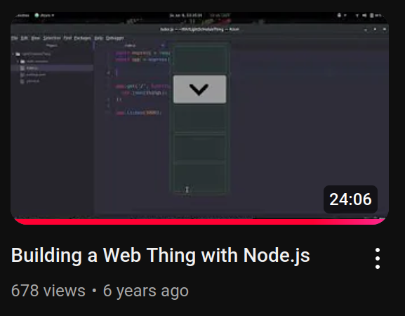
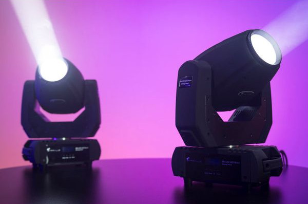

WOT for every thing
by Christian 'Jaller' Paul
on 2024-11-14
What are the limits of IoT?

My WoT journey started building things with Express.js, e.g. a countdown and a virtual lamp.
I even recorded a tutorial about it.
Building a Thing server
- Define the server
- Define the Things
- Let the server expose the things
But what if there are too many Things you want to represent? It would be too much for your CPU, storage, RAM and network to handle them all simultaneously.
Building a dynamic Thing server
- Define the server
- Start the server
- Initialize Things on demand
Vancouver Public Library:
/osm/opening-hours/way/37111640
- osm - My application ID (osm = OpenStreetMap)
- opening-hours - A sub-application ID
- way - OpenStreetMap type
- 37111640 - The way ID of the library on OSM
When a new element gets requested
- Fetch element on OpenStreetMap
- Resolve address to a timezone
- Fetch the local holiday days
- Parse the opening_hours string
- Set timeouts for when the place opens / closes
🌌 WoT Anything
An extensible Thing server with on demand initialisation of Things
City bike station:
/youbikes/501202040
WoT Anything matches the API operations
- getDescription
- getProperty (= readproperty)
- getPropertyEventEmitter (= observeproperty)
- getAllProperties (= readallproperties)
- etc.
In summer, I got my hands on professional lighting equipment. It uses the IP-based Art-Net protocol which I translated to WoT.
Art-Net universe:
/art-net/1
Art-Net channels:
/art-net/1-19-10
universe 1
starting with channel 19
a total of 10 channels

MH-x30 LED Beam Moving Head
(no advertisement, just the lamp I had available for testing)
Art-Net for an MH-x30 LED Beam in its 10 channel mode:
/art-net/1-19-mh-x30-led-beam-10
We replaced the trailing "-10" with a product name for meaningful property names.
Note, all three Art-Net Things you just tried, share some or all channels. The mapping is performed by the WoT Anything server.
🌌 WoT Wrench
A web app to test and debug Things. It's a consumer.
The Godot game engine supports HTTP requests and Websockets, so it's possible to integrate WoT into games.
What are the limits of IoT?
Available features
- HTTP
- Server-Sent-Events (SSE)
- Websockets
- Getting, setting and observing Properties
- Invoking synchronous Actions
- Basic types
- Nullable Properties
- Base64-encoded media
Incomplete feature wishlist
- Optimistic UI
- Observing Events
- Async Actions
- Input selector
- uriVariables
- Languages
- Thing Models
- JSON-LD
- Tests for everything
- Documentation for everything
- Security mechanisms
How to support me?
- Provide mentorship for self-employment
- Hire me to work on these projects
- Help with the UX design
- Send me your things (TDs, URLs)
- Talk to me online or at WoT Week in November 2024
Thank you for your attention!
chrpaul.de/about